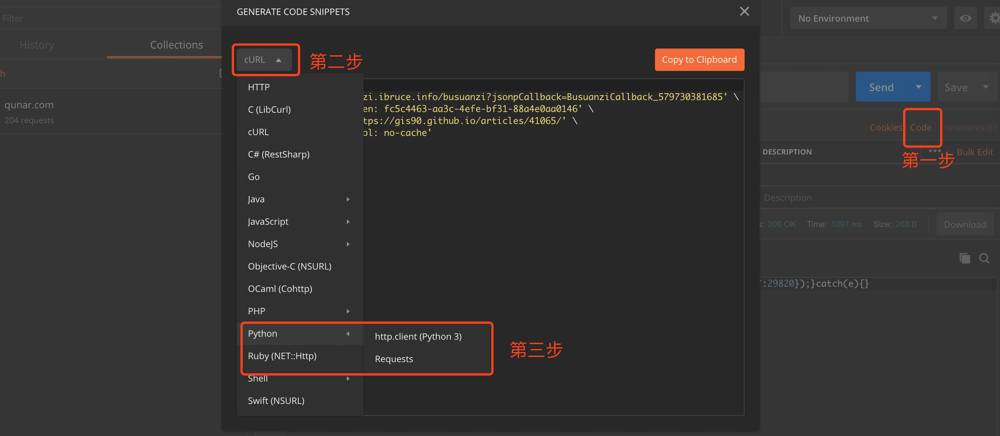

背景
身为一位程序员，没事的时候爬爬糗百笑话、淘宝女郎、小片片。。。。。。有点邪恶了。反正关于爬虫，相信很多人都不陌生，本人没事的时候也写写爬虫的小项目，写过天气报警、糗百笑话、美女图片。。。。。。，后续会在博客中挑选个例子写出来。
关于数据采集，用Python去写爬虫程序，主要涉及2个主要的Package：Requests && BeautifulSoup。
| 包名 | 功能说明 |
|---|---|
| Requests | HTTP获取源数据 |
| BeautifulSoup | 解析 && 获取目标数据 |
关于这2个爬虫利器分为上下篇进行讲解，本篇先介绍Requests，主要功能是进行数据的获取。
简介
官方原话：1
2
3
4The requests library is the de facto standard for making HTTP requests in Python.
It abstracts the complexities of making requests behind a beautiful,
simple API so that you can focus on interacting with services and
consuming data in your application.
简要内容：Requests是一个很实用的Python HTTP客户端库，主要用于API请求。
安装
1 | pip install requests |
如果不指定版本，会自动安装最新的版本，有不熟悉pip的请自行进行恶补。
源码说明
1 | def request(method, url, **kwargs): |
以上代码是Requests包中运用方法的核心，写代码多看看源码，提高代码的质量，很重要。
上面的方法是关于HTTP请求的核心方法，挑重点说，方法的参数很多。其中method代表HTTP请求的方式，GET、POST等等；url代表请求的地址；kwargs代表不限参数，但是在注释中罗列了一些重要的参数，查看以你发现，其中这些参数都是关于HTTP协议用到的数据。参数的具体请自动查看源码，下面也会针对于常用的参数进行demo举例。
使用教程
HTTP协议请求方式主要有：GET、POST、HEAD、OPTIONS、PUT、PATCH、DELETE、TRACE和CONNECT方法。虽然方法很多，但是工作中常用的只有GET与POST。
本人主要对Requests进行介绍，关于HTTP协议的相关知识这个不做过多讲解。
无参
1
2
3
4
5
6
7
8
9
10import requests
url = "https://gis90.github.io/"
# GET
response = requests.get(url)
# POST
response = requests.post(url)最简单的HTTP请求。
有参
1
2
3
4
5
6
7
8
9
10
11
12import json
import requests
url = "https://gis90.github.io/"
payload = {"key": "value"}
# GET
response = requests.get(url=url, params=payload)
# POST
response = requests.post(url=url, data=payload)GET方法的params参数实际就是url中的参数，使用GET方法可以把参数直接封装在url中，也可以把参数封装起来传递到request方法中。
POST方式的参数就是form表单提交的参数。json数据
1
2
3
4
5
6
7
8
9
10
11
12import json
import requests
# headers中添加上content-type这个参数，指定为json格式
headers = {'Content-Type': 'application/json'}
# post的时候，将data字典形式的参数用json包转换成json格式。
payload = {"key": "value"}
payload = json.dumps(payload)
url = "https://gis90.github.io/"
# POST
response = requests.post(url=url, headers=headers, data=payload)POST可传递json数据，需要在headers里指定数据的类型。
文件
1
2
3
4
5
6import requests
files = {'file': open('report.xls', 'rb')}
url = "https://gis90.github.io/"
r = requests.post(url, files=files)把文件读取到内存中，在以流的形式传递出去。
请求头
1
2
3
4
5
6
7
8
9
10
11
12
13
14
15
16
17import json
import requests
url = "https://gis90.github.io/"
payload = {"key": "value"}
headers = {"user-agent": "my-app/0.0.1"}
# GET
response = requests.get(url=url,
params=payload,
headers=headers)
# POST
response = requests.post(url=url,
data=json.dumps(payload)
headers=headers)所有的header值必须是string、bytestring或者unicode。
Cookie
1
2
3
4
5
6
7
8
9
10
11
12
13
14import requests
url = "https://gis90.github.io/"
# 第一种
cookies_1 = dict(key_1='value_1')
response = requests.get(url, cookies=cookies_1)
# 第二种
cookies_2 = requests.cookies.RequestsCookieJar()
cookies_2 = jar.set('key_2', 'value_2', domain=url, path='/cookies')
r = requests.get(url, cookies=cookies_2)
# 查看cookies信息以及类型
print response.cookies, type(response.cookies)demo中给出了2种set cookies的方式，用第一种的较多，其中输出的cookies是一个requests.cookies.RequestsCookieJar对象。
timeout
1
2
3
4
5import requests
url = "https://gis90.github.io/"
response = requests.get(url, timeout=5)请求时间，可选参数。以设定参数timeout秒数时间之后停止等待响应，超过这个实际会停止对服务端的请求，如果是一般的restful api接口也就是几百毫秒的响应时间，如果是大数据量可以设置长一点，默认是无限制。
建议最好，设定一个值，这样请求timeout之后，也会报异常，对异常进行捕捉可以对方法进行监控报警，知道程序是否出现异常状况，时间根据对方的接口而定，建议60 ～ 120，单位：秒。allow_redirects
1
2
3
4
5import requests
url = "https://gis90.github.io/"
response = requests.get(url, allow_redirects=False)参数之一，允许请求重定向，默认值是True，所以这个参数只有有不允许重定向需求的时候采用得到。
HTTP重定向：服务器无法处理本次发送过来的request请求，服务器会返回一个新的url让客户端可以进行跳转，客户端会自动访问该url地址，但是在客户端是无法分辨是否重定向了， 重定向的状态码是3XX，关于状态码下面有粗略的介绍。RESPONSE
1
2
3
4
5
6
7
8
9
10
11
12
13
14
15
16
17
18
19
20
21
22
23
24import requests
data = {'key': 'value'}
response = requests.get(url='https://gis90.github.io/', data=data)
# 请求地址
print response.url
# 响应状态码
print response.status_code
# 响应头
print response.headers
# 文本编码
print response.encoding
# 字符串格式响应内容
print response.text
# 二进制格式响应内容
print response.content
# json格式响应内容
print response.json()
# 原始套接字响应内容
print response.raw
# cookie信息
print response.cookies总结一下需要说明得点。
状态码
类型 描述 1** 信息，服务器收到请求，需要请求者继续执行操作 2** 成功，操作被成功接收并处理 3** 重定向，需要进一步的操作以完成请求 4** 客户端错误，请求包含语法错误或无法完成请求 5** 服务器错误，服务器在处理请求的过程中发生了错误 响应头
返回来的headers是一个requests.structures.CaseInsensitiveDict对象，但是直接可以用dict字典的方式进行数据获取。
text与content
text与content都是返回网页的内容，唯一的区别：content是字节码，而text的内容编码是字符串。
cookies
cookies在上面有详细说明。
学习参考
Requests官方：https://realpython.com/python-requests/
快速上手（中文版）：https://cn.python-requests.org/zh_CN/latest/user/quickstart.html
快速上手（高阶版）：https://cn.python-requests.org//zh_CN/latest/
特别技巧
Postman工具，相信做开发没有几个人不知道，它的最大用处就是用来实现各种HTTP请求。
今天在这里教大家一个技巧，如果使用requests包去模拟HTTP请求失败的话，就用Postman工具去请求，毕竟是可视化的工具，参数、cookies、headers等等比较好设置，只要在Postman上成功实现了请求，使用下图的功能，就可以查看关于请求的相关代码，很方便。

Postman下载地址：https://www.getpostman.com/